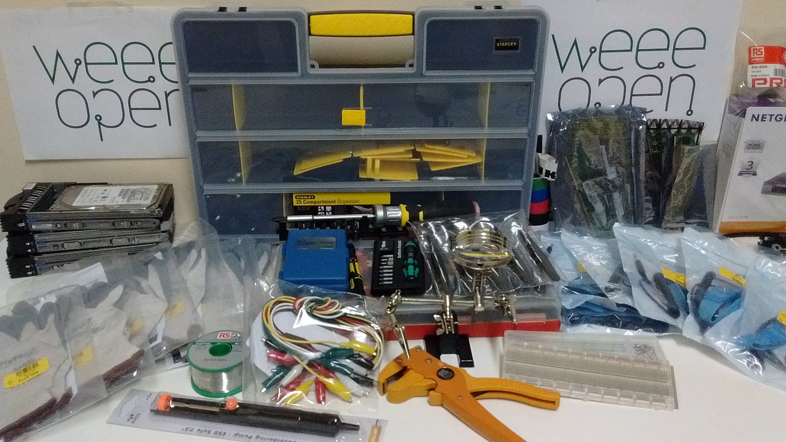

title: "Allestimento del laboratorio: quasi finito"
date: 2017-02-18T11:59:00Z
template: blogpost.php
abstract: Il nostro laboratorio all'interno del DISAT sta lentamente prendendo prendendo forma! Ancora poche settimane e prenderemo nuovamente in mano cacciaviti, saldatore e RAEE!
facebook: https://www.facebook.com/weeeopen/posts/389934474698250
img:
    src: /blog/media/allestimento-lab-mini.jpg
    alt: Attrezzatura di vario genere presente in laboratorio
    title: Attrezzatura di vario genere presente in laboratorio
    hide: true
---

<p>Il nostro laboratorio all'interno del DISAT sta lentamente prendendo prendendo forma! Ancora poche settimane e prenderemo nuovamente in mano cacciaviti, saldatore e RAEE!</p>
